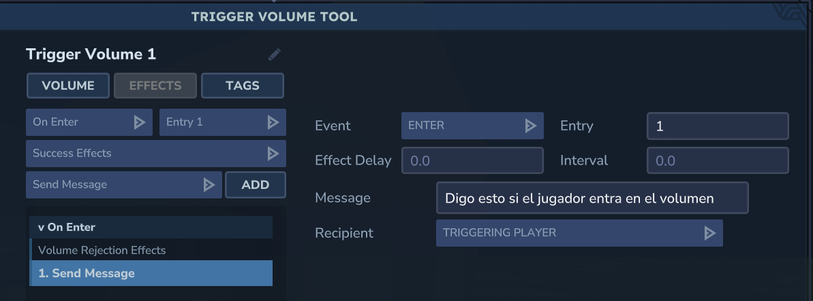
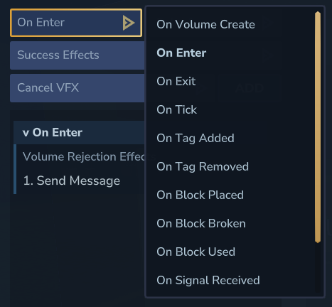
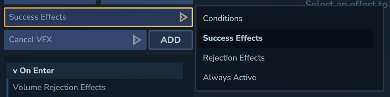

Página 01
Qué son los Trigger Volumes
Un Trigger Volume (TV) es una entidad que se coloca en el mundo, recibe instrucciones y ejecuta una serie de efectos si se cumplen las condiciones especificadas.
Cuando programas un Trigger, en el fondo le estás diciendo tres cosas:
- Si ocurre este EVENTO.
- Comprueba esta CONDICIÓN, si aplica.
- Ejecuta este EFECTO.
Si ocurre A, comprueba B y entonces ejecuta C.
Las tres pestañas de un TV
Todos los Trigger Volumes tienen varias propiedades que se agrupan en tres pestañas:
1. Volume
Reúne la parte espacial y estructural del Trigger: su volumen, alcance y comportamiento base dentro del mundo.
2. Effects
Es la pestaña principal. Aquí es donde se programa el evento a escuchar, las condiciones de éxito y el efecto a realizar.
3. Tags
Permite trabajar con etiquetas y lógica más avanzada. Parece una parte secundaria, pero es clave para mecánicas complejas.
Aunque la pestaña principal es Effects, las otras dos son esenciales para hacer mecánicas más avanzadas.
La pestaña Effects por dentro
En esta captura se ve la pestaña Effects de un Trigger Volume ya configurado:

Es el tipo de suceso que el TV va a escuchar para empezar a evaluar sus instrucciones.
Lo dejamos para más adelante, porque entra en usos más avanzados.
Aquí decides cómo se interpreta el resultado del evento y cuándo debe continuar la ejecución.
Es la parte que ejecuta acciones reales dentro del juego. La lista de opciones es grande y permite construir sistemas muy distintos.
Campo de evento
El evento es lo que "escucha" el TV para progresar sus instrucciones. Si el evento programado ocurre, el Trigger da el siguiente paso.

El caso más fácil de entender es On Enter: cuando el jugador entra al volumen moviendo al personaje, el TV hace lo que tenga programado. Más adelante veremos el listado completo de eventos y para qué sirve cada uno.
Campo de condición
Aquí especificas cómo debe interpretarse el evento y qué camino toma el TV a partir de ahí.

- El evento sí se ha cumplido.
- El evento no se ha cumplido.
- El evento se cumple según condiciones adicionales.
- El evento está siempre activo.
Lo más normal en este campo es dejar lo que viene por defecto: Success Effects. Eso hace que, cuando se cumpla la condición especificada, se ejecuten los efectos detallados a continuación, sin más. Es el caso clásico de si A, entonces B.
Aun así, usar efectos condicionales más específicos o Rejection Effects abre la puerta a mecánicas bastante más avanzadas.
Tipos de eventos
Estas son algunas de las familias de eventos más útiles para empezar:
- On Volume Create. Cuando un prefab se carga y contiene un Trigger con este evento, se dispara al aparecer en el mundo.
- On Enter. Se activa cuando una entidad entra en el volumen.
- On Exit. Se activa cuando una entidad sale del volumen.
- On Tick. Se parece a On Enter, pero no lanza los efectos una sola vez: se repite mientras lo que activa el TV siga dentro. Como los ticks son muy rápidos, se puede ralentizar con la propiedad Interval, especificada en segundos.
- On Tag Added / On Tag Removed. Lo veremos en otra parte de la guía, porque conecta con lógica basada en tags.
- On Block Placed / On Block Broken. Puede escuchar la colocación o destrucción de cualquier bloque dentro de un volumen, o servir para un solo bloque si el Trigger ocupa exactamente ese espacio. También se puede usar como señal de entrada para comprobar otras condiciones que no dependan del bloque en sí.
- On Block Used. Aplica a bloques interactuables. Si el jugador interactúa con ellos, el Trigger se dispara.
- On Signal Received. Se ejecuta cuando el TV recibe una señal.
- On Entity Died. Comprueba si una entidad o mob muere dentro del volumen.
- Always Active. No escucha un evento puntual, sino que está siempre activo.
Tipos de efectos
Una vez se cumple el evento y la condición correspondiente, el TV ejecuta uno o varios efectos. Esta es una primera lista de referencia:
Entonces, ¿qué se puede programar con esto?
Muchísimo. Desde una puerta simple que se abre al entrar, hasta una cadena de señales, tags, comprobaciones y prefabs que montan una mecánica completa. La potencia real del sistema aparece cuando combinas varios eventos y varios efectos entre sí.
La idea importante de esta primera página es que entiendas el modelo mental del Trigger Volume: escucha algo, evalúa algo y hace algo.